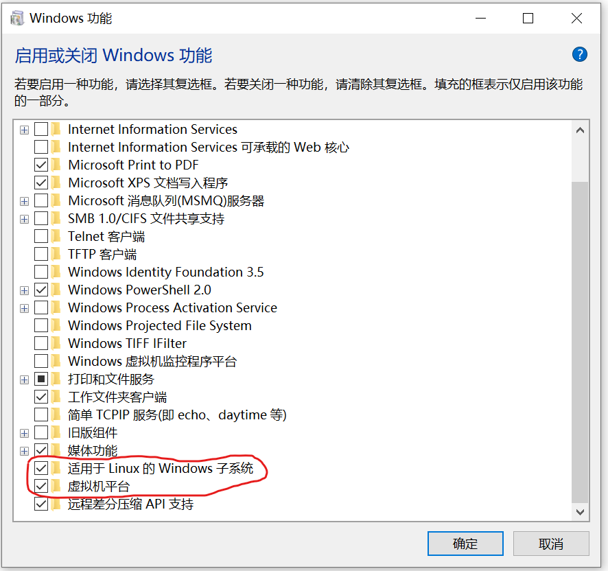
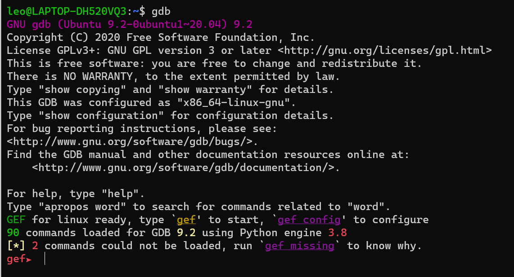
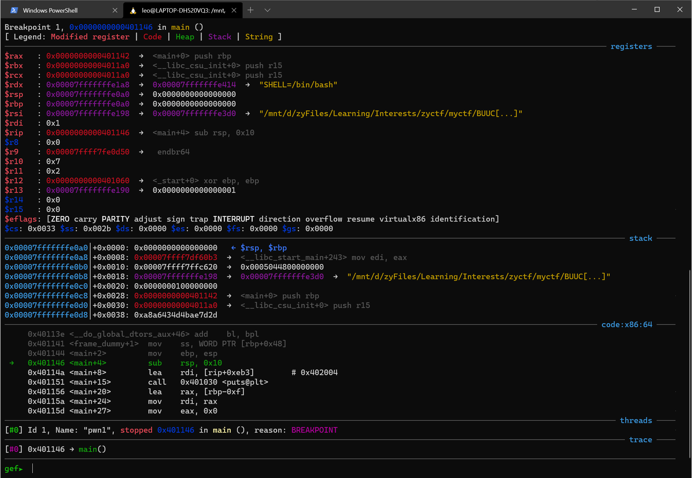

分享一下wsl2-ubuntu20安装以及gef调试工具安装
对于配置完全且好用的工具，真是没有抵抗力。。。
Let’s start exploiting!
首先，开启你的windows系统中的wsl。打开windows功能，勾选以下两项

Powershell输入
wsl -l -v查看wsl版本，如果是1的话还需要升级到2。按照微软的文档，下载升级程序并点击安装即可接下来选择ubuntu20作为待安装的Linux版本，在Microsoft Store中搜索并安装即可
初始化ubuntu并且设置用户名密码
执行以下命令更新源
1
2$ sudo apt update
$ sudo apt upgrade安装gdb
1
sudo apt install gdb
安装gef，这里我尝试curl，wget都不行，会卡住，但是明明网站是可以访问的，没办法只要复制网站内容然后粘贴到自己创建的
.gdbinit-gef.py文件中，然后source写入。以下是官方给出的几种安装方式1
2
3
4
5
6
7
8
9
10
11
12
13
14via the install script
# using curl
bash -c "$(curl -fsSL http://gef.blah.cat/sh)"
# using wget
bash -c "$(wget http://gef.blah.cat/sh -O -)"
or manually
wget -O ~/.gdbinit-gef.py -q http://gef.blah.cat/py
echo source ~/.gdbinit-gef.py >> ~/.gdbinit
or alternatively from inside gdb directly
gdb -q
(gdb) pi import urllib.request as u, tempfile as t; g=t.NamedTemporaryFile(suffix='-gef.py'); open(g.name, 'wb+').write(u.urlopen('https://tinyurl.com/gef-master').read()); gdb.execute('source %s' % g.name)如果一切无误的话，启动gdb，你会看到以下内容:

打开一个文件看看，简直beautiful and elegant
